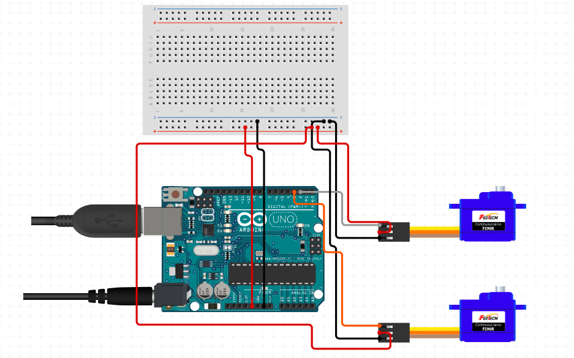
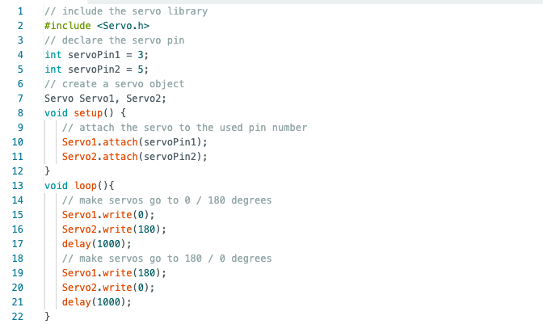
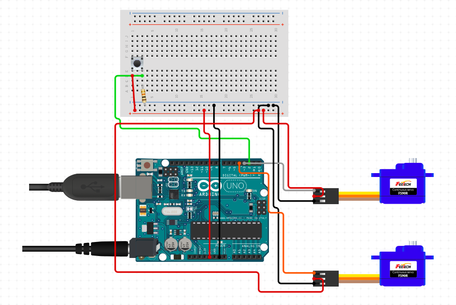
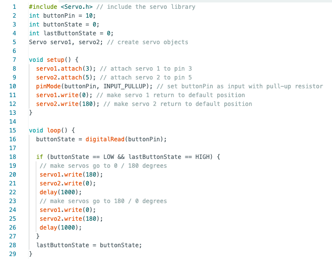

# arduino uno and servos
# ---------------------------------
i had already used microcontroller programming with arduino uno in my assignment from last week to open and close my box. so i decided to use my time this week to get even more comfortable with arduino uno and teach myself how to do more interesting things with it. i still find myself struggling a little to easily turn circuit diagrams into actual circuits on a breadboard and i want to practice that skill this week.
i also wanted my time this week to be invested in something that i would end up using for my final project. i decided to experiment with servo motors and build an initial model of what my double paneled t-shirt folder could look like.
i found a plank of soft wood and screwed two servo motors to the edge of the plank. i also attached my arduino uno and breadboard set-up to the wooden plank in a make-shift manner by just sticking two small allen keys through the holes in the microcontroller holder into the soft wood. next, i wired the two servo motors to the arduino uno and this is what it looked like.

here is a schematic of the circuit.

for the t-shirt folding machine to work, i would need the two servo motors to first turn towards each other and then away from each other at the same time. here is the code i used for the two servos.

i uploaded my code to my arduino and this is what it looked like.
however, i didn't want the servos to just keep turning inwards and outwards repeatedly. for a single t-shirt to get folded, the panels of the folder would only need to turn inwards and outwards once at a time. so i decided to add a button to control the movement of the servos. this is what my circuitry looked like after adding the button.

here is a schematic of my new circuit with the button.

i attached the button to pin 10 and set it as an input with a pull-up resistor. here is the code i used for the two servos with a button.

and here is how it worked.
for the t-shirt folding device, i will have two panels connected to two servo motors. i tried to use some makeshift cardboard panels to simulate what my final product could look like. i simply stuck the servo arm into the gap inside the cardboard. but obviously it did not work. here is a blooper of my attempt.